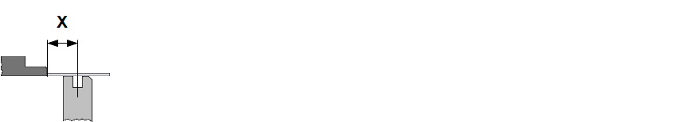

In diesem Register können Korrekturen der Anschläge vorgenommen werden. Die Anschlagskorrekturen sind in folgende Bereiche unterteilt:
In diesem Bereich kann die Position der hinteren Anschlagfinger korrigiert werden. Die hinteren Anschlagfinger können zur Biegelinie Als Biegelinie wird eine Linie bezeichnet an der entlang die Biegung der Schenkel erfolgt. vor oder zurück bewegt werden.
- XB-Absolut
- XB-Relativ
Mit dieser Option kann der eingestellte Abstand vom gewählten Anschlagpunkt zur Mitte des Unterwerkzeugs korrigieren werden. Die Korrektur kann für die linke (XB1) und rechte (XB2) Achse getrennt oder für beide Achsen als Gruppe ausgeführt werden.

Feinjustierung der eingetragenen Achsposition.
In diesem Bereich kann die Position der Hinteranschläge nach rechts oder links verschoben werden.
- ZB-Absolut
- ZB-Relativ
Mit dieser Option wird der eingestellte Abstand des Referenzpunktes des jeweiligen Anschlagfingers zur linken Aussenkante des Pressentischs korrigiert.
Feinjustierung der eingetragenen Achsposition.
In diesem Dialog können Sie die Position der Hinteranschläge vertikal nach oben oder unten verschieben.
- RB-Absolut
- RB-Relativ
Mit dieser Option wird der eingestellte Abstand des gewählten Anschlagspunkts relativ zum Unterwerkzeug verändert.
Feinjustierung der eingetragenen Achsposition.
In diesem Bereich die Parameter Start Rückzug Als Rückzug wird die Rückwärtsbewegung des Anschlagarms bezeichnet, um eine Kollision des Anschlagfingers mit dem Biegeteil zu verhindern. Die Rückzugbewegung wird ausgeführt, nachdem das Biegeteil zwischen Ober- und Unterwerkzeug geklemmt wurde., Start Peripherie und die Geschwindigkeit der Anschläge korrigiert werden.
- Start Rückzug
- Endposition
- Fliegend
- Start Peripherie
-
CAUTION:
Verfahrende Peripherieachsen können das Biegeteil zum Bediener stossen und diesen verletzen. Beim Korrigieren der Peripherieachsen muss die Handhabung des Biegeteils beachtet werden.
Bei Biegeteilen mit langen Schenkeln hinter dem Biegewerkzeug sollte die Option Verzögerung verwendet werden, um das Bewegen der Peripherieachsen vom Bediener auszulösen.
- Verzögerung
- Oberer Totpunkt
- Klemmpunkt
- Geschwindigkeit
Der Rückzug bewirkt ein Zurückziehen der X-Anschlagsachsen. Es stehen zwei Positionen zur Verfügung.
Die Oberwange wartet im Klemmpunkt, bis die X-Achsen die Position erreicht haben.
Die Oberwange stoppt kurz am Klemmpunkt, danach fahren die X-Achsen und die Oberwange aber gleichzeitig weiter.
Diese Option bestimmt, wann die Peripherieachsen Als Peripherieachsen werden automatisch verfahrbare Anschläge, Biegehilfen und Winkelmesssysteme einer Biegemaschine bezeichnet. losfahren dürfen.
Die Peripherieachsen fahren erst nach einer Bedieneraktion los (Zustimmung z.B. mit Fußpedal).
Erreicht die Oberwange den oberen Totpunkt, fahren die Peripherieachsen zur nächsten programmierten Position.
Passiert die Oberwange beim Auffahren den Klemmpunkt, fahren die Peripherieachsen bereits zur nächsten programmierten Position.
Diese Option bestimmt die Verfahrgeschwindigkeit der Achsen in Prozent.